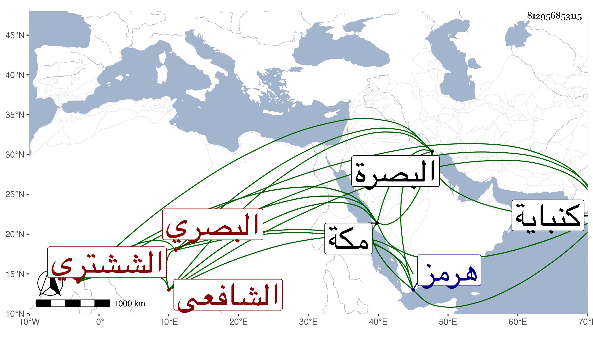

0902Sakhawi.DawLamic.ITO20230111-ara1.EIS1600.812956853115
Biography ID: 812956853115
48
محمد بن محمد بن محمد الششتري البصري الشافعي نزيل مكة . ولد في سنة عشرين بالبصرة وقدم مكة في سنة أربع وخمسين وكان يشتغل بالعلم ويحض دروس قاضيها البرهان وسافر غير مرة إلى هرمز آخرها مع ولد له كبير ثم إلى كنباية فغرقا في خورها سنة ست وسبعين تقريبا . ذكره ابن فهد .
